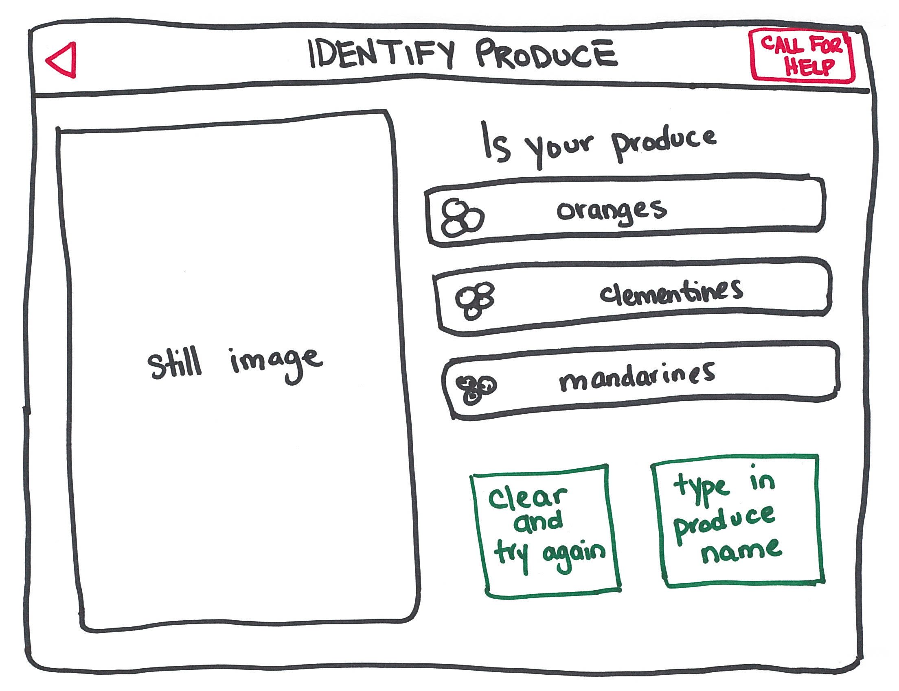
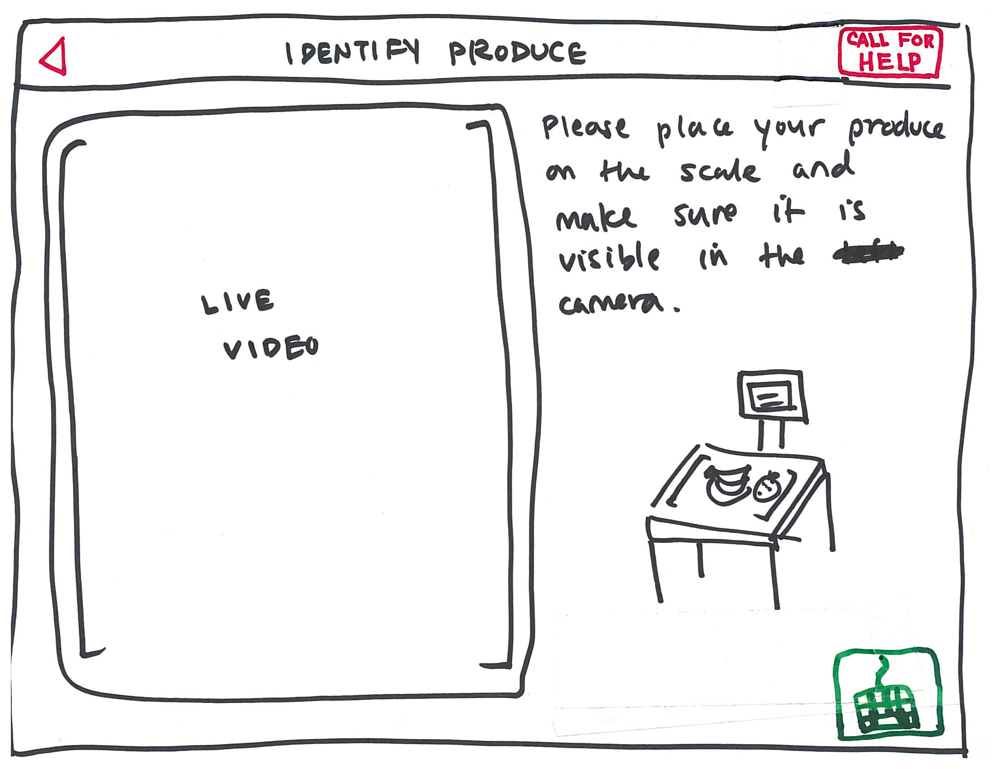
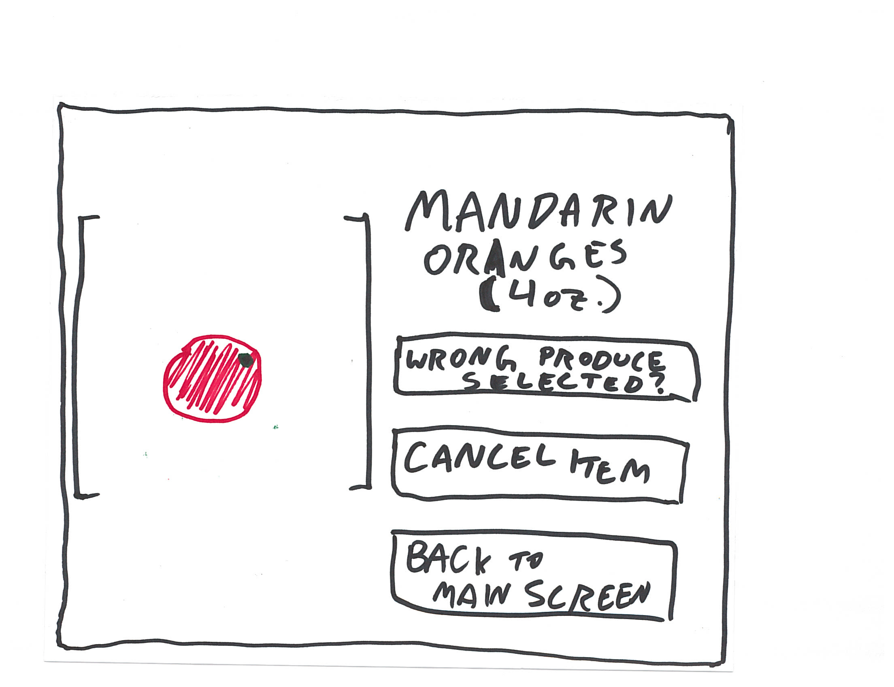
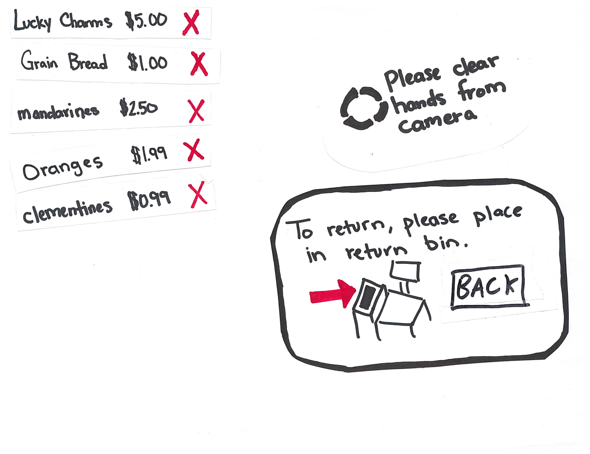

Design Development
VERSION 3: THE FINAL DESIGN
OVERVIEW
Our goal in this phase was to develop, design, and test a low-fidelity prototype of our redesigned self-checkout machine. Our final design focuses on the problems of buying produce and returning items with current self-checkout systems - what were identified as major pain points during user research. Our new process is simpler and more intuitive. First and foremost our new design adheres to our persona’s values that self-checkout is the quicker checkout option. It takes measures to prevent theft, putting employees’ minds at rest. Most importantly, it does not demand czaristic obedience as current self-checkout machines do.
Our redesigns were primarily focused on two pain points identified from user interviews: purchasing/identifying produce, and returning items. While we tweaked several other features, these were the two scenarios which required a major overhaul.
 
Our new design of purchasing produce relies on image recognition technology and a weighing system that most self-checkout units already have. Produce is placed on the scale (directly in front and below of the screen), which now contains a camera. When produce is placed on the scale, it is naturally in view of the camera. The captured image is used to identify the produce, and returns a list of options which the user can choose from. If the correct item is not listed, users can choose to try again, call an attendant, or manually type in the name of the produce.
 
Major points: RFID, auto-remove from purchase, prompt to place in bin, correct produce, manual empty
Existing item-return systems are clunky, and typically require that an attendant is called in order to prevent theft. In order to ease this process, we have placed a weighted, RFID-scanning return bin adjacent to the self-checkout machine. We have also attached an RFID tag to each item with a barcode, so that if a shopper leaves the store without scanning an item, an alarm will sound. (A similar system is used at most libraries.)
When a shopper scans an item, the RFID tag is deactivated. If he places an item in the return bin, it is automatically detected and reactivated. If a shopper presses the name of an item in their purchase list, or presses the red X next to it, he will be prompted to place the item in the bin. If she should click the name of an unscannable item (i.e., produce), then she will also be given the option to correct the type of produce, in order to account for human error. Produce will be checked by weight in the return bin as an anti-theft measure. The return bin will need to be manually emptied by store attendants.
USER NEEDS (how we met them, and where we fall short)
From our user research, we have discovered that shoppers’ primary needs are efficiency, independence, and security. The most common reason we found that people use self-checkout machines is because they consider them to be quicker. However, they are frustrated that the machine slows them down by requiring them to bag each item one-by-one, and that it takes such a long time to scan produce. We removed unnecessary steps, allowing users to bag their goods at their own pace and creating a quicker produce-checkout process.
The majority of complaints people have about self-checkout revolve around independence. People dislike having an attendant called for them; they dislike being told when and how to bag their goods; they dislike the errors they receive when they do not act in strict accordance with the machine’s draconian policies; and more than anything, they hate the machine condescendingly narrating each step of the process. We did away with all of this -- the user may perform each step as he/she sees fit, attendants are only called when requested (and calls may be cancelled), error messages do not blame the user for their actions, and above all, the machine does not speak. After using our prototype, users reported that they felt much better about the system and felt like it allowed them to check out the way they wanted to, and had a much easier time navigating the system. Users can fix some of their own mistakes (wanting to return an item, picking the wrong item) independently Some users even chose to call an attendant of their own volition, possibly as a result of the “call attendant” button being rebranded as “call for help.”
Much of our design had to fit around security, as it is a significant concern of store owners and employees. We have attached an RFID tag to each scannable item. If a user exits the store while carrying an unscanned RFID tag, an alarm will sound -- the same as will happen at the library. When an item is scanned, its RFID tag is deactivated. When placed in the return bin, as the item is removed from the purchase list, the tag is reactivated. Unscannable items such as produce must be checked out by weight, and will be weighed again when placed in the return bin. An added security feature is that produce will only be recognized by our system if no hands are in the camera’s view. The self-checkout machine will prompt the user to remove their hands if they are left in the camera image. This is because some shoplifters will lift their item slightly above the scale so that it will register as a lower weight (and therefore a lower price). Using these processes we have eliminated the need for the dreaded bagging-area scale, which is the most common source of unwanted attendant-calling.
While we did address some of the basic security needs of a store attendant, our design does fall short of addressing all the needs of a store employee. In the stores we visited, attendants were given some sort of cue that they were needed (blinking light, verbal call). Sometimes an attendant wouldn’t notice that they were needed or they were busy with someone else. As a result, customers become more frustrated (both at the machine and the attendant) and the attendant is not performing to the best of their abilities. We had considered designing an interface for attendants that would inform them when a station needed help. Unfortunately, we did not pursue this because it would be difficult to balance all these needs and values while still having a project that would fit in the semester.
USER TESTING: FROM VERSION 1 TO VERSION 3
In order to improve our first paper prototype, we did an initial round of user testing where each person was given four tasks to complete using system. We carefully chose our four tasks (buy oranges, change oranges to clementines, buy lucky charms, return lucky charms) to hit our major screen redesigns (produce purchase, returning items).
Through feedback from round one of user testing we were able to gain some insight about what our users wanted. The bullets below list the design changes and the insights that spurred them
Redesign 1 (version 1 - 2)
- Addition of physical return bin to the paper prototype
- Users were unsure where to put returned items once they were done.
- Have the return bin rely on a scale and RFID scanner
- It was pointed out that shoplifting from the return bin was a possibility. We already had RFID tags in all the scannable items anyways, and this would just add another level of security.
- Place the camera inside the scanning scale pointed upward.
- Some users became confused when they had to first place the item in front of the camera, and then place it on the scale. Most users would forget to weight the item and they felt that it wasn’t intuitive. Since users have to weigh produce on the scale anyways, this reduces a step.
- Clicking the item name produces a popup screen with item information
- Users did like the inclusion of the ‘x’ next to items to remove them, but most of them tried to first press the item name (which produced no results). They felt that pressing the item name was more intuitive, although this could have been a result of how our paper prototype item list looked like.
- Button rebranding (“calling attendant”, “get information”)
- “get information” button changed from a “?” to an “i” (the universal information symbol)
- “calling attendant” button changed from a person’s silhouette to “call for help”
- We initially had two constant buttons in the top right corner of all screens. Icons that we thought were intuitive did not actually convey the actions we thought they did. Users just did not understand what the buttons were for.
After redesigning our screens to take in initial user feedback, we did a second round of paper prototype testing. We found that users found fewer problems with this version, and most issues were from edge cases that we had not considered.
Redesign 2 (version 2 - 3)
- Remove “get information” button
- None of our testers used that information button, and when they needed help they used the “call for help” button. The wording of the “call for help” button implies that all issues can be solved by pressing it, making the information button unnecessary.
- Indicate where the camera is
- While most users did place the produce in the correct place, they were still unsure of their actions. Including a clear indication of where the camera is should prevent any uncertainty.
- Backup produce lookup
- Users mentioned that it would be really frustrating to use our produce lookup system if the image recognition failed. We added a screen where users could type in the name of the produce.
- Produce must be taken off the scale to be added to the item list
- One user left her orange on the scale and proceeded to purchase the same orange three times without error. In order to avoid this error, we added a screen that would prompt a user to remove their produce from the weighing/scanning area. The produce item will not be added to the user’s purchase until it is removed from the scale.
FROM PERSONAS TO VERSION 1
By looking at the needs and values of our three personas, we started design development with open ideation. Ideas from this framework ranged from very minor tweaks to unrealistically blue-sky overhauls. These are shown below.
{kind=link}
After placing all ideas together, we organized them based on theme. For example, all physical-related ideas were grouped in the bottom right corner. From these groupings, we identified three themed designs approaches.
We titled our first plausible design approach “Beefing Up the Automation.” This improves the artificial intelligence of the self-checkout system. The major component of this design is image recognition of produce. Instead of scrolling through multiple pages of product options, the computer takes and image of the produce and suggests a possible produce selection. A quick storyboard of “Beefing Up the Automation” is shown in below.
{kind=link}
Our second plausible design approach is “Relying More on Attendants”. This system, shown below, hinges on the self-checkout floater playing a more active role in self checkout. For example, when checking out product, an attendant will always be called to assist or supervise this step. Additionally, the action of calling an attendant will be reworded to be less offensive to the shopper. Initially, we thought this design approach would also include a system for the attendants monitor checkout stations and would alert someone when a station needed help. In most current stores, the attendant waits for a visual or verbal cue to go help someone. This cue can be missed while an attendant is helping someone else which frustrates the customer. An interface like this would help customers stay satisfied and ensure that attendants can succeed at their job.
{kind=link}
The final plausible design approach is “Using Existing Technology.” In this scenario, the self checkout system uses newer technology in the physical world to improve the current system. There are two main technologies utilized: stickers and RFID tags. Stickers with barcodes printed on them can be used to better identify/scan product. RFID tags can be used for any canned or boxed items to improve scanning item (now the barcode must not be perfectly scanned) and decrease shoplifting. A storyboard of this is shown below. We did not pursue this option simply because it did not seem like a compelling interface design problem.
{kind=link}
In order to narrow into one initial paper prototype design, we needed an efficient way to combine and choose between these design scenarios. This was accomplished during a design critique. The resulting chart had each design scenario as a row and each impacted task of self-checkout as a column. From this framework, we could pick/choose/combine designs. As seen below, final decisions are marked if included as green checks and if discarded as red Xs. The reasoning behind disregarding ideas varied. One example is the red X for “not always” calling an attendant (in the first column of the second row). This conflicted Forced Francis persona’s need. Francis needed to get in and out of the sore quickly. Calling the attendant for every product interaction would conflict with this need. All other Xs were because it directly conflicted with the chosen design or was out of scope of our interface design.
{kind=link}
From these design ideas we were able to draft up a paper prototype Version 1, and began iterating through user testing.